Follow a successful trace into prompt examples
On this page
Back to implementation studies · Download the editable study


Trace which teacher outputs become demonstrations for each predictor. Keep training inputs, accepted traces and held-out results in separate files. Inspect the metric before you trust a selected example.
Start offline
Work the case below before you inspect the original source. The
trace, exercise and worked answers are complete offline. The local research evaluator
gives you a second metric to inspect. Follow score_query
and assert_disjoint to see what the score rewards and which
data can overlap. The optional upstream links at the end need an
internet connection.
Work three examples
Use a synthetic two-predictor program. extract maps a
message to an item ID and intent. queue maps those fields
to a queue. Use one teacher attempt per example and a budget of two
bootstrapped demos. Use zero raw labeled demos so you can inspect
accepted trace steps by themselves.
| Training ID | Input | Teacher result | Expected result | Accept |
|---|---|---|---|---|
| T1 | “P7 tray arrived split” | P7, repair | P7, repair | yes |
| T2 | “P9 tray arrived split” | P7, repair | P9, repair | no |
| T3 | “P2 needs a return label” | P2, returns | P2, returns | yes |
For T1, write an extract demo with the original message
and extracted fields. Write a queue demo whose input is
those fields and whose output is repair. Do the same for
T3. No T2 trace enters either list under this metric. Count teacher
attempts and accepted demos separately. Three attempted teacher calls
can add two examples to each predictor if each accepted trace runs each
predictor once.
Now assume extract runs twice during an accepted
example. In the example implementation, the selection step keeps one
demo per predictor for each accepted trace. Predict the maximum count
that one accepted example adds to each predictor. Record that your paper
exercise uses one attempt per example.
Show what a weak metric admits
Change the metric so it compares queue only. T2 now passes because
the teacher sends it to repair. The resulting extract demo
can teach P7 for P9. With a two-trace budget, T1 and T2 fill the
accepted slots and T3 never enters this bootstrapping run.
Inspect both the accepted traces and the failures under the strong metric. The final outcome can look correct even when intermediate fields are wrong. Add the required item ID to the prediction or use the trace in the metric, depending on your program's contract. Make any such change before you compare held-out results.
Adapt the comparison
Split eight invented messages into four training, two development and two test records. Write a baseline with no demos. Write a second version with fixed labeled demos. Compare both with bootstrapped demos from the training records. Stub the teacher and its trace first. Record exact matches on both fields.
Separate duplicate templates across the split if they disclose a test label. Hold the test records aside until you choose a metric and demo limit on development records. Keep a row for each attempted example. Include teacher revision, metric revision, accepted status and reason. Keep item IDs and exact prompt strings synthetic in this exercise.
Check your solution
The strong metric rejects T2. The queue-only metric accepts it. Each predictor receives only steps from its own known name. The selected demonstrations trace back to training IDs. Development and test data stay out of compilation. Your report names which measured difference the fixture supports and which comparisons need more data.
Retrieve from memory
- Does the metric accept a final prediction or one demonstration at a time?
- What enters
validationin this implementation? - How can a passing final queue hide a bad demo?
Show worked answers
- The metric evaluates the example prediction and can inspect the trace. A pass permits the relevant trace steps to become demos.
- It contains training examples with no accepted bootstrap. External test records belong in a separate set.
- A correct queue can conceal an incorrect extracted item ID. The bad trace can then become an extraction demo.
Optional source inspection
Read BootstrapFewShot
at its constructor and compile method. Open DSPy's dspy/teleprompt/bootstrap.py.
Read compile, _prepare_predictor_mappings,
_bootstrap, _bootstrap_one_example and
_train in that order. The documentation and main links were
read on 2026-11-20.
Draw the student and teacher as two instances of one program shape.
Follow how predictor names and signatures match. During one teacher run,
track example.inputs(), the final prediction, the captured
trace and the metric result. A passing teacher run contributes trace
steps by predictor name. The student receives accepted steps as
augmented demos. It can also receive raw labeled examples from the
training set. The internal variable validation in
_bootstrap denotes unbootstrapped training examples in this
code path. Keep an external test set.